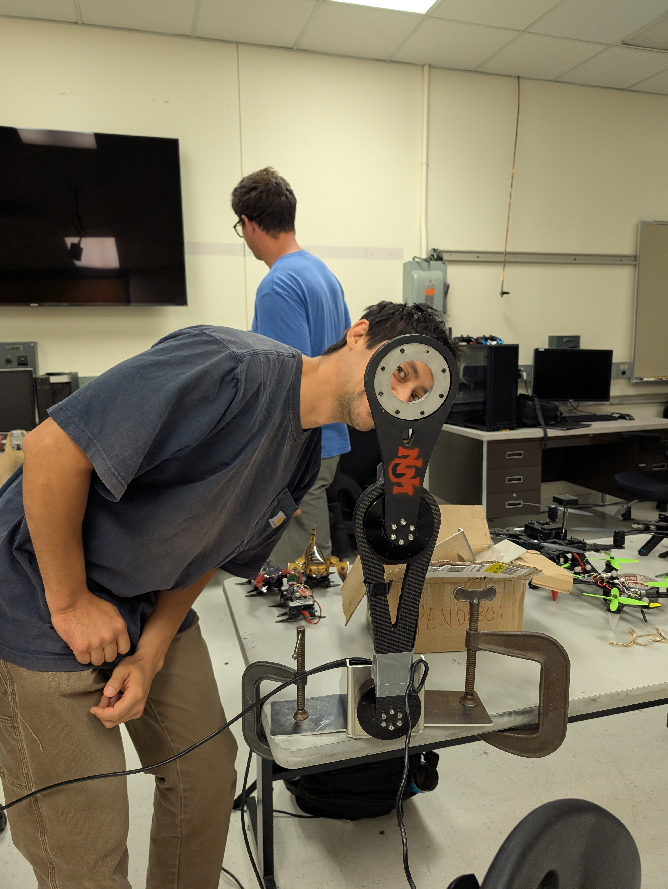

Programmatic Policy Synthesis for Robotics via LLMs and Optimization Techniques
A simple weekly update page for our team's current milestones and active work.
Project description
We will implement and extend the method from Bosio et al. (2025), which automatically
synthesizes robot controllers as short, interpretable Python programs generated by a large
language model (LLM). For each generated controller program, we will tune its numerical
constants (e.g., gains and thresholds) using gradient-free optimization to maximize
closed-loop performance. Our work will focus on an end-to-end replication in a 3D robot
simulator (MuJoCo), including a full evaluation harness, code sandboxing, program
parameterization (replacing numeric literals with a tunable parameter vector), and an
iterative database-driven search loop. After replication, we will explore improvements
such as robustness-aware tuning via domain randomization and comparing alternative
black-box optimization methods (e.g., Bayesian Optimization, CMA-ES) to the paper’s
baseline. Finally, we will integrate the resulting policies into ROS 2 as a controller
node and demonstrate the best policy on a low-risk hardware platform with
conservative safety limits.
Semester Project Summary
From LLM-Generated Policies to a Working Pendubot Swing-Up Controller
Over the semester, our team explored whether LLM-guided program search could help
synthesize interpretable controllers for a pendubot swing-up task. We began by testing
FunSearch-style policies in simulation, then moved toward a custom pendubot model and a
hardware-informed three-phase controller. Our final result was a working pendubot swing-up
that reaches the top equilibrium.
Final ResultSuccessful pendubot swing-up to the upright equilibrium
The completed controller combines simulation-driven exploration, hardware testing, and
classical control structure to move the pendubot from the downward equilibrium to the
upright equilibrium at the top.
01
LLM / FunSearch Policy Exploration
We first used FunSearch-style generated policies in DeepMind Control's prebuilt
double-pendulum environment. The generated policies were evaluated visually through
simulation videos, then hand-pruned when parts of the policy were physically
nonsensical or unhelpful.
02
Simulation Lessons
Early generated policies produced interesting behaviors, but they struggled when the
system started with no motion. To investigate whether the policies could swing up once
useful motion was present, the elbow was initialized near pi in some tests.
03
Custom Pendubot Model
After discovering a large gap between the prebuilt simulation and the physical
pendubot, we pivoted to a custom DeepMind Control model using a custom MuJoCo XML with
physics parameters chosen to better match the real pendubot hardware.
04
Hardware-Informed Controller
The final controller was no longer a purely generated policy. Instead, it became a
physically motivated three-phase swing-up strategy, with the first rock-up phase
loosely inspired by behavior found during FunSearch exploration.
Final Three-Phase Control Strategy
The final controller uses different behavior depending on where the pendubot is in the
swing-up process. This structure helped bridge the gap between interesting simulated
behavior and a controller that could work on the actual system.
Phase 1: Rock-Up
The rock-up phase gets the pendubot out of the stable downward equilibrium. It is
phase-dependent and behaves like a bang-bang controller: one side of the equilibrium
receives positive torque, while the opposite side receives negative torque.
Phase 2: Pump-Up
Outside approximately 0.92 radians, or about 52°, the
controller pumps energy into the system using the negative shoulder angular velocity.
A tanh term smooths the torque instead of immediately saturating it.
Phase 3: LQR Catch
Near the top, the controller switches to a prebuilt LQR controller to catch and
stabilize the pendubot at the upright equilibrium. This final catch phase uses both
the shoulder and elbow actuators.
Final Demonstrations
Final simulation: custom DeepMind Control / MuJoCo pendubot model
reaching the upright equilibrium.
Hardware demo: physical pendubot swing-up reaching equilibrium at
the top.
Key Takeaways
LLM-generated policies were useful for exploration, but not sufficient by themselves
for reliable hardware transfer.
The gap between the prebuilt simulation and the real pendubot motivated a custom
MuJoCo XML model with more realistic physical parameters.
Hardware testing revealed that increasing torque alone could not break through the
swing-up ceiling, motivating the smoother pump-up phase.
The final working solution combined ideas from FunSearch exploration with a structured
controller: rock-up, pump-up, and LQR catch.
What we're currently working on
We have been working together the past two weeks to get the Pendubot functional. Now:
Ruben and Jai are working on setting up some inital optimization experiments.
Hector and Leif are working on improving the Pendubot's code and getting the underactuated modes working well.
We are about a week out from beginning to collect data and record performance. Here is Jai with the balanced Pendubot!

Current date
Weekly updates
Week of Apr 15 The Pendubot is completely functional in its fully-actuated mode. Changes to the Pendubot's Python code have been made to improve data collection and general performance. Now, experiments with the data optimization can be performed.
Week of Apr 1 The Pendubot has been located and initial setup is been tested. There are errors during setup with the Pendubot. The team will be working on these errors.
Week of Mar 11 Issues with the codebase have been taken care of. Hector and Leif are looking into setting up the Pendubot in the MARHES lab.
Week of Feb 25 The codebase has been installed on each member's machine and everyone has done some preliminary simulations. Ruben and Jai are working on solving some minor bugs in the simulations. Hector and Leif are reviewing the Pendubot code.
Week of Feb 18: We are currently in the research phase so we
worked on our understanding of the paper and its codebase and started thinking about
how to get their code running on our machines. We also started looking a little into
how to run an experiment on hardware.
Week of Feb 11: We split into two teams:
Ruben and Jai are working on understanding the codebase.
Hector and Leif are working on researching how to run the simulations/hardware
experiments.